Project 06 / 07
NATURE RETREAT
Reconnect with nature for mental purification
- Type
- Rehabilitation centre
- Location
- Karaburun

Overview
A nature retreat concept aiming to reconnect people with nature for mental purification through serene and minimalist architecture: a rehabilitation campus of four-person living units on a steel structure.
Inspired by the Beyazıt Külliyesi in Edirne, with its holistic understanding of healing and multi-functional campus logic. This set of sheets covers the site, the living units, the structure and the facade.
- Type
- Rehabilitation centre
- Location
- Karaburun
- Sheets
- Site plan, sections, unit plans, structure
- Studio
- Interdisciplinary Studio II
Concept
A holistic understanding of healing.
- 01
Multi-functional campus logic
Inspired by the Beyazıt Külliyesi, Edirne.
- 02
Natural fabric
A coastal area with serene bays, rocks and native vegetation.
- 03
Relationship with the urban fabric
Create a buffer zone, preserve the coastal ecology, blend with the environment.

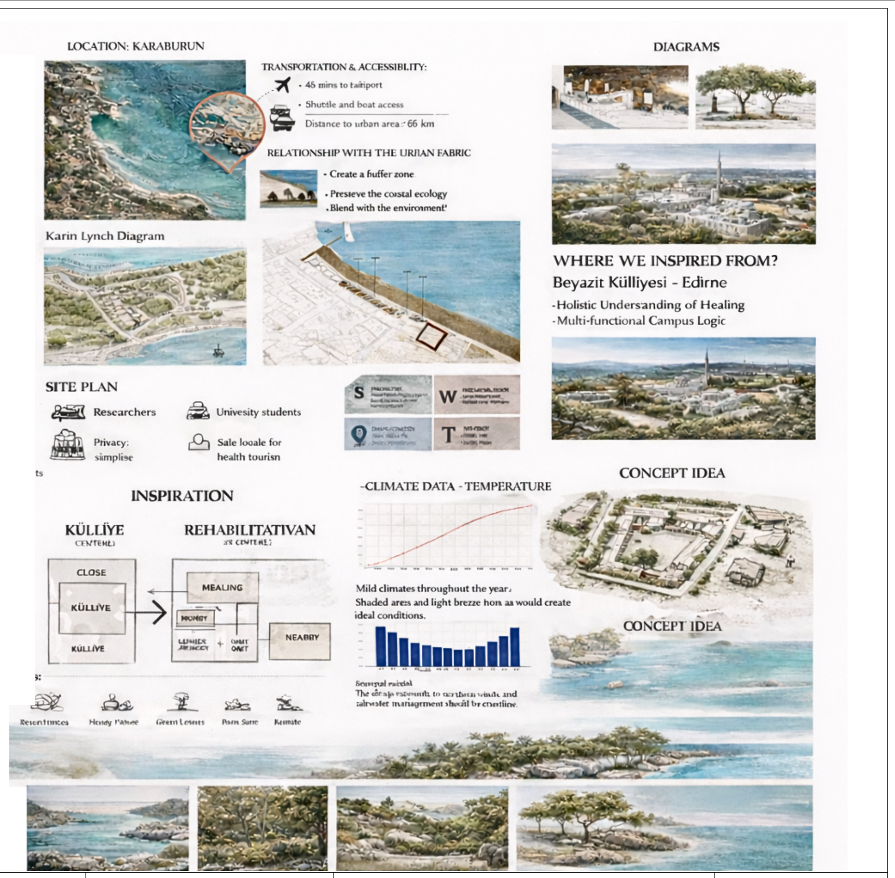
Inspect
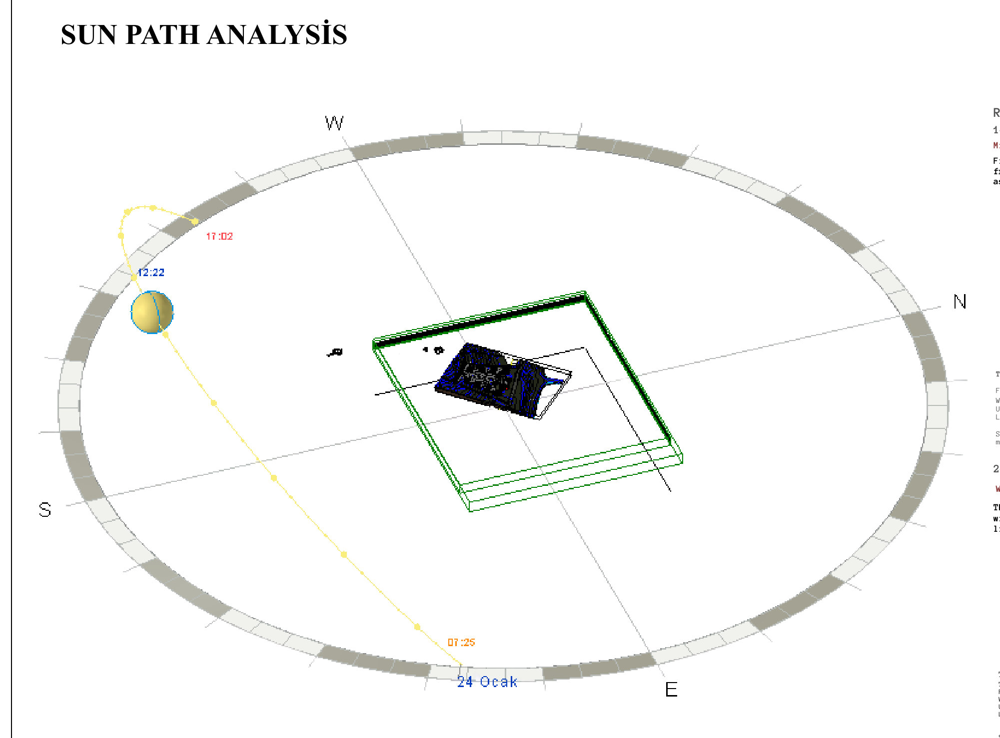
InspectPlans

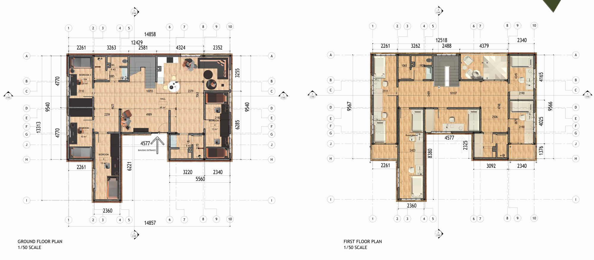
Inspect
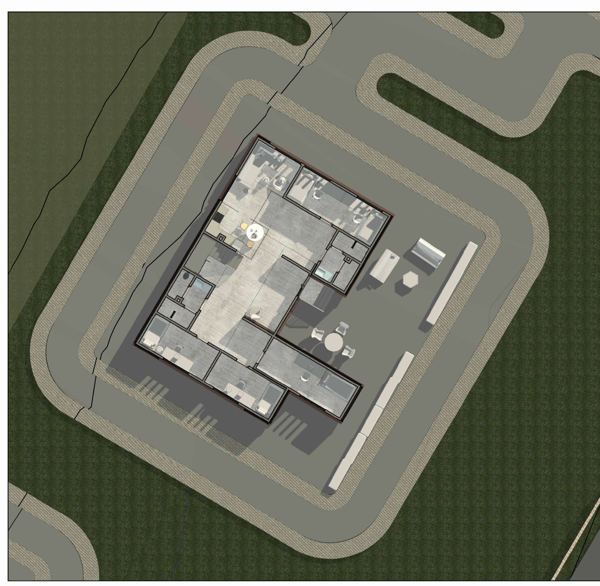
Inspect
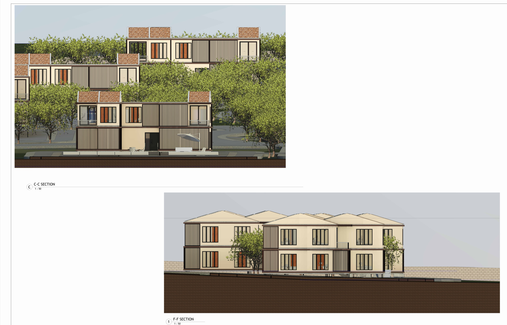
InspectSpaces
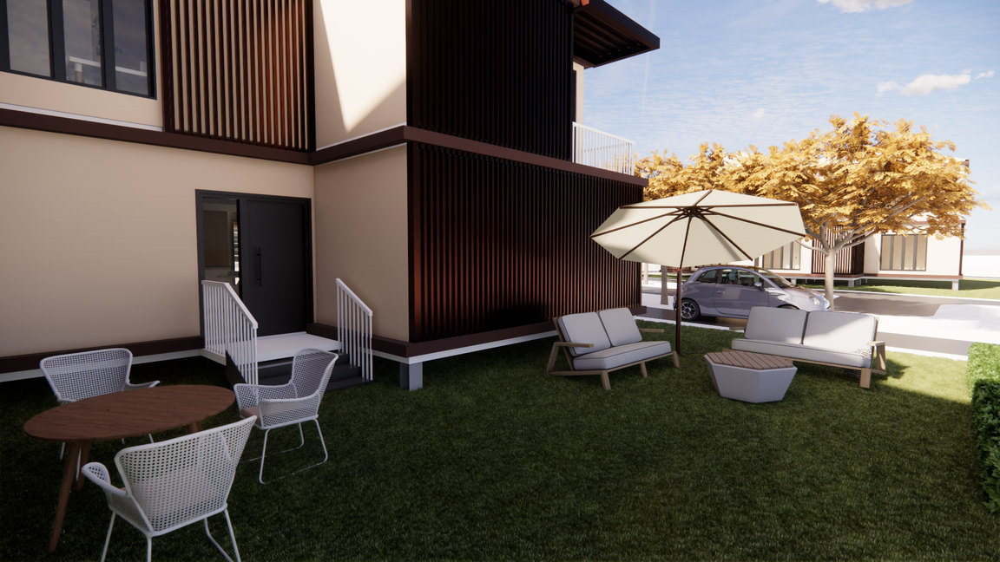
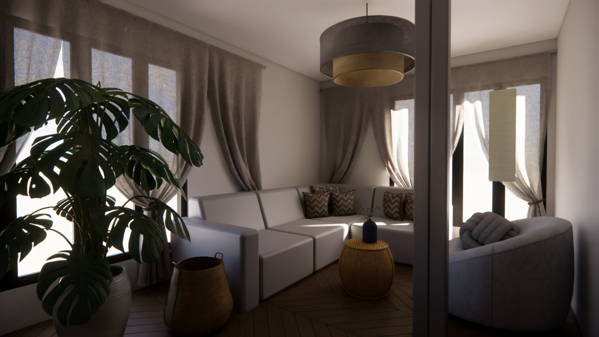

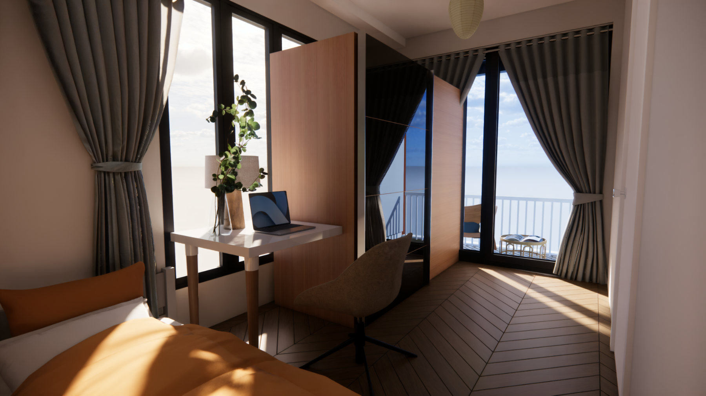
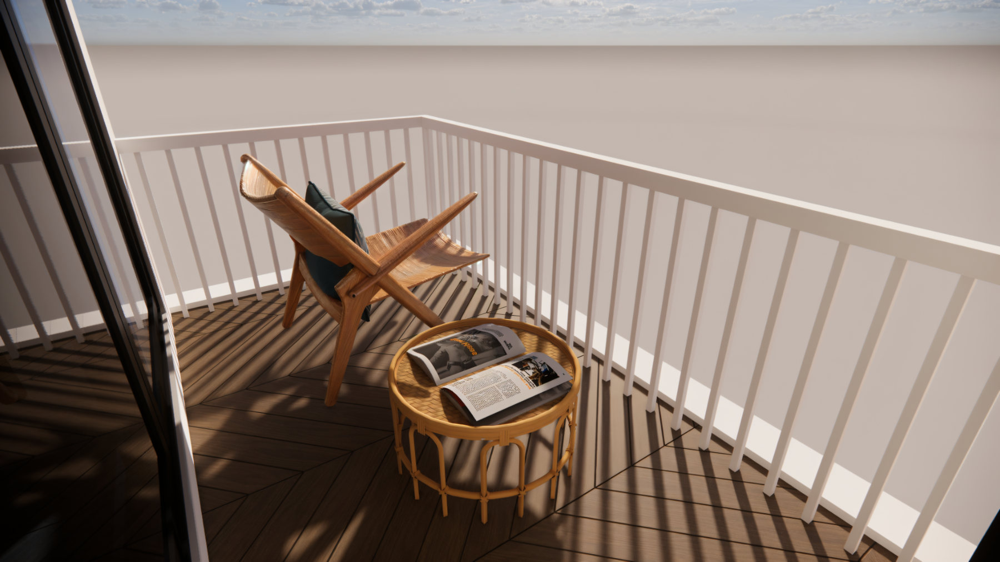
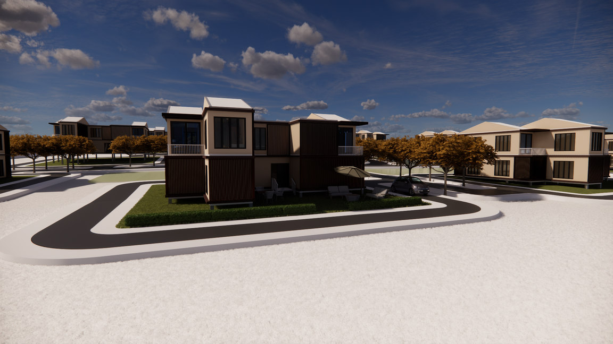
Details

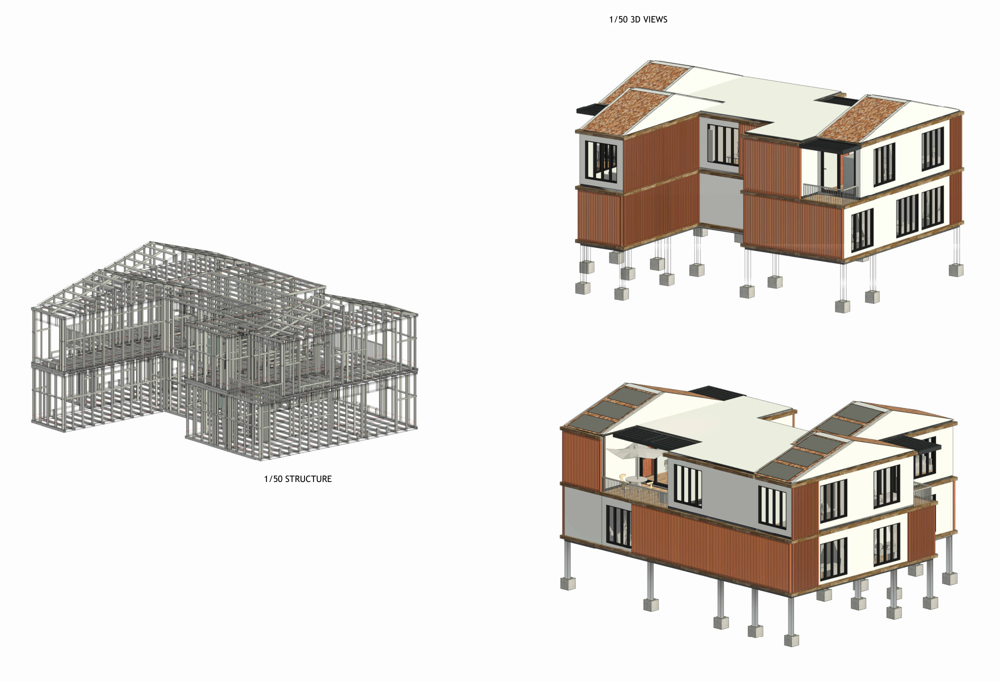
Inspect
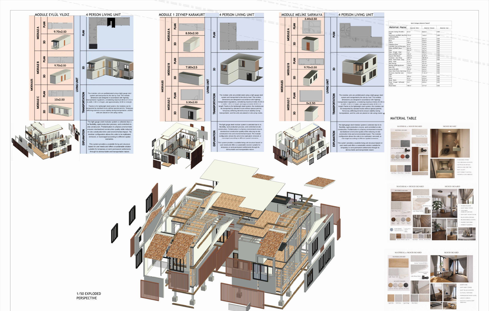
Inspect
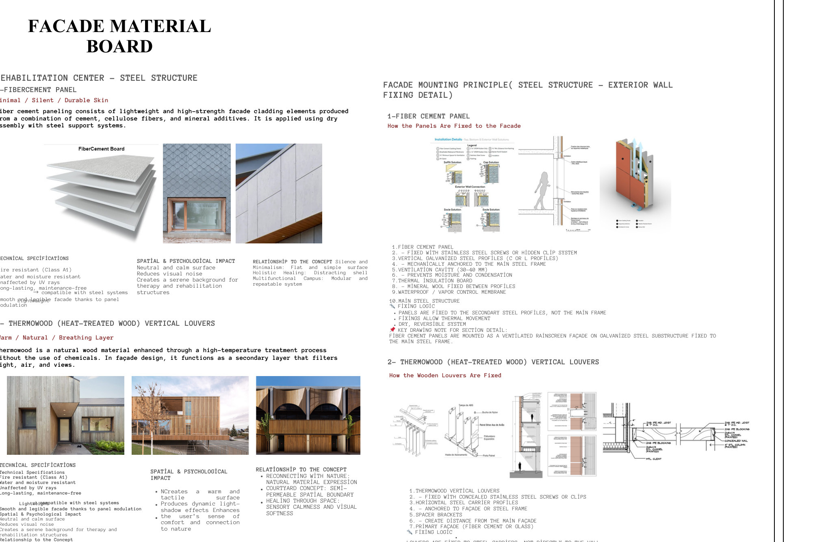
Inspect